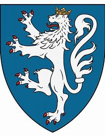

127750773 Johanne Andersdotter (Stenbrikke)
* före 1360 Eberstein, Braunschweig, Tyskland
† före 1419 Knivholt, Danmark
* före 1360 Eberstein, Braunschweig, Tyskland
† före 1419 Knivholt, Danmark
255501546 Anders Aagesen Stenbrikke
* 1295 Kokkedal, Hjörring, Danmark
† efter 1360
Blev minst 65 år
* 1295 Kokkedal, Hjörring, Danmark
† efter 1360
Blev minst 65 år
511003092 Aage Saxesen Stenbrikke
* omkring 1250 Kokkedal, Hjörring, Danmark
† omkring 1314
Riksråd, Riddare, Hövitsman, Länsman i Estland
Blev ca 64 år
* omkring 1250 Kokkedal, Hjörring, Danmark
† omkring 1314
Riksråd, Riddare, Hövitsman, Länsman i Estland
Blev ca 64 år
1022006184 Saxe Aagesen Stenbrikke
* omkring 1200 Estland
† före 1260
Riddare, Fogde i Estland
Blev ca 59 år
* omkring 1200 Estland
† före 1260
Riddare, Fogde i Estland
Blev ca 59 år

255501547 Marianne Albertsdatter von Eberstein
* 1275 Everstein, Holzminden, Tyskland
† 1360 Asdal, Hjörring, Danmark
Blev högst 85 år
* 1275 Everstein, Holzminden, Tyskland
† 1360 Asdal, Hjörring, Danmark
Blev högst 85 år

511003094 Greve Albrecht VI von Everstein
* 1230 Volkmarsen, Hessen, Tyskland
† 1289 Lubeck, Tyskland
Greve av Everstein. Herre till Örnhuvud
Blev högst 59 år
* 1230 Volkmarsen, Hessen, Tyskland
† 1289 Lubeck, Tyskland
Greve av Everstein. Herre till Örnhuvud
Blev högst 59 år
1022006188 Greve Ludwig I den äldre von Everstein
* omkring 1206 Everstein, Holzminden, Tyskland
† 1284 Everstein, Holzminden, Tyskland
Greve av Everstein, Herre av Örnhuvud
Blev ca 78 år
* omkring 1206 Everstein, Holzminden, Tyskland
† 1284 Everstein, Holzminden, Tyskland
Greve av Everstein, Herre av Örnhuvud
Blev ca 78 år

1022006189 Grevinnan Adela von Gleichen
* omkring 1215 Gleichen, Lower Saxony, Tyskland
† före 1266 Tyskland
Grevinna av Everstein
Blev ca 50 år
* omkring 1215 Gleichen, Lower Saxony, Tyskland
† före 1266 Tyskland
Grevinna av Everstein
Blev ca 50 år

511003095 Grevinnan Marianne Esbernsdatter Galen
* omkring 1240
† 1284
Grevinna till Örnhuvud
Blev ca 44 år
* omkring 1240
† 1284
Grevinna till Örnhuvud
Blev ca 44 år
1022006190 Esbern Vagnsen Udnes
* omkring 1192
† 1268 Århus, Danmark
Blev ca 76 år
* omkring 1192
† 1268 Århus, Danmark
Blev ca 76 år
1022006191 Margrete Erlandsdatter (Hvide)
* omkring 1199 Ellinge (M)
† omkring 1260 Ellinge (M)
Blev ca 61 år
* omkring 1199 Ellinge (M)
† omkring 1260 Ellinge (M)
Blev ca 61 år